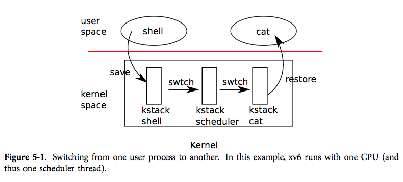
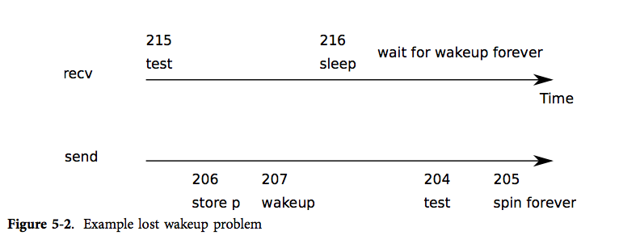

任何操作系统都可能碰到进程数多于处理器数的情况，这样就需要考虑如何分享处理器资源。理想的做法是让分享机制对进程透明。通常我们对进程造成一个自己独占处理器的假象，然后让操作系统的多路复用机制（multiplex）将单独的一个物理处理器模拟为多个虚拟处理器。本章将讲述 xv6 是如何为多个进程模拟出多处理器的。
xv6 中多路复用的实现如下：当一个进程等待磁盘请求时，xv6 使之进入睡眠状态，然后调度执行另一个进程。另外，当一个进程耗尽了它在处理器上运行的时间片（100毫秒）后，xv6 使用时钟中断强制它停止运行，这样调度器才能调度运行其他进程。这样的多路复用机制为进程提供了独占处理器的假象，类似于 xv6 使用内存分配器和页表硬件为进程提供了独占内存的假象。
实现多路复用有几个难点。首先，应该如何从运行中的一个进程切换到另一个进程？xv6 采用了普通的上下文切换机制；虽然这里的思想是非常简洁明了的，但是其代码实现是操作系统中最晦涩难懂的一部分。第二，如何让上下文切换透明化？xv6 只是简单地使用时钟中断处理程序来驱动上下文切换。第三，可能出现多个 CPU 同时切换进程的情况，那么我们必须使用一个带锁的方案来避免竞争。第四，进程退出时必须释放其占用内存与资源，但由于它本身在使用自己的资源（譬如其内核栈），所以不能由该进程本身释放其占有的所有资源。xv6 希望能够简洁明了地处理这些难点，不过最后其代码实现还是比较“巧妙”。
xv6 必须为进程提供互相协作的方法。譬如，父进程需要等待子进程结束，以及读取管道数据的进程需要等待其他进程向管道中写入数据。与其让这些等待中的进程消耗 CPU 资源，不如让它们暂时放弃 CPU，进入睡眠状态来等待其他进程发出事件来唤醒它们。但我们必须要小心设计以防睡眠进程遗漏事件通知。本章我们将用管道机制的具体实现来解释上述问题及其解决方法。
如图表5-1所示，xv6 在低层次中实现了两种上下文切换：从进程的内核线程切换到当前 CPU 的调度器线程，从调度器线程到进程的内核线程。xv6 永远不会直接从用户态进程切换到另一个用户态进程；这种切换是通过用户态-内核态切换（系统调用或中断）、切换到调度器、切换到新进程的内核线程、最后这个陷入返回实现的。本节我们将以内核线程与调度器线程的切换作为例子来说明。

如我们在第2章中所见，每个 xv6 进程都有自己的内核栈以及寄存器集合。每个 CPU 都有一个单独的调度器线程，这样调度就不会发生在进程的内核线程中，而是在此调度器线程中。线程的切换涉及到了保存旧线程的 CPU 寄存器，恢复新线程之前保存的寄存器；其中 %esp 和 %eip 的变换意味着 CPU 会切换运行栈与运行代码。
swtch 并不了解线程，它只是简单地保存和恢复寄存器集合，即上下文。当进程让出 CPU 时，进程的内核线程调用 swtch 来保存自己的上下文然后返回到调度器的上下文中。每个上下文都是以结构体 struct context* 表示的，这实际上是一个保存在内核栈中的指针。swtch 有两个参数：struct context **old、struct context *new。它将当前 CPU 的寄存器压入栈中并将栈指针保存在 *old 中。然后 swtch 将 new 拷贝到 %esp 中，弹出之前保存的寄存器，然后返回。
接下来我们先不考察调度器调用 swtch 的过程，我们先回到用户进程中看看。在第3章中我们知道，有可能在中断的最后，trap 会调用 yield。yield 又调用 sched，其中 sched 会调用 swtch 来保存当前上下文到 proc->context 中然后切换到之前保存的调度器上下文 cpu->scheduler（2516）。
swtch（2702）一开始从栈中弹出参数，放入寄存器 %eax 和 %edx（2709-2710）中；swtch 必须在改变栈指针以及无法获得 %esp 前完成这些事情。然后 swtch 压入寄存器，在当前栈上建立一个新的上下文结构。仅有被调用者保存的寄存器此时需要被保存；按照 x86 的惯例即 %ebp %ebx %esi %ebp %esp。swtch 显式地压入前四个寄存器（2713-2716）；最后一个则是在 struct context* 被写入 old（2719）时隐式地保存的。要注意，还有一个重要的寄存器，即程序计数器 %eip，该寄存器在使用 call 调用 swtch 时就保存在栈中 %ebp 之上的位置上了。保存了旧寄存器后，swtch 就准备要恢复新的寄存器了。它将指向新上下文的指针放入栈指针中（2720）。新的栈结构和旧的栈相同，因为新的上下文其实是之前某次的切换中的旧上下文。所以 swtch 就能颠倒一下保存旧上下文的顺序来恢复新上下文。它弹出 %edi %esi %ebx %ebp 然后返回（2723-2727）。由于 swtch 改变了栈指针，所以这时恢复的寄存器就是新上下文中的寄存器值。
在我们的例子中，sched 调用 swtch 切换到 cpu->scheduler，即 per-cpu 的调度器上下文。这个上下文是在之前 scheduler 调用 swtch（2478）时保存的。当 swtch 返回时，它不会返回到 sched 中，而是返回到 scheduler，其栈指针指向了当前 CPU 的调度器的栈，而非 initproc 的内核栈。
上一节中我们查看了 swtch 的底层细节；现在让我们将 swtch 看做一个既有的功能，来研究从进程到调度器然后再回到进程的切换过程中的一些约定。进程想要让出 CPU 必须要获得进程表的锁 ptable.lock，并释放其拥有的其他锁，修改自己的状态（proc->state），然后调用 sched。yield（2522）和 sleep exit 都遵循了这个约定，我们稍后将会详细研究。sched 检查了两次状态（2507-2512），这里的状态表明由于进程此时持有锁，所以 CPU 应该是在中断关闭的情况下运行的。最后，sched 调用 swtch 把当前上下文保存在 proc->context 中然后切换到调度器上下文即 cpu->scheduler 中。swtch 返回到调度器栈中，就像是调度器调用的 swtch 返回了一样（2478）。调度器继续其 for 循环，找到一个进程来运行，切换到该进程，然后继续轮转。
我们看到，在对 swtch 的调用的整个过程中，xv6 都持有锁 ptable.lock：swtch 的调用者必须持有该锁，并将锁的控制权转移给切换代码。锁的这种使用方式很少见，通常来说，持有锁的线程应该负责释放该锁，这样更容易让我们理解其正确性。但对于上下文切换来说，我们必须使用这种方式，因为 ptable.lock 会保证进程的 state 和 context 在运行 swtch 时保持不变。如果在 swtch 中没有持有 ptable.lock，可能引发这样的问题：在 yield 将某个进程状态设置为 RUNNABLE 之后，但又是在 swtch 让它停止在其内核栈上运行之前，有另一个 CPU 要运行该进程。其结果将是两个 CPU 都运行在同一个栈上，这显然是不该发生的。
内核线程只可能在 sched 中让出处理器，在 scheduler 中切换回对应的地方，当然这里 scheduler 也是通过 sched 切换到进程中的。所以，如果要写出 xv6 中切换线程的代码行号，我们会发现其执行规律是（2478），（2516），（2478），（2516），不断循环。以这种形式在两个线程之间切换的过程有时被称作共行程序（coroutines）；在此例中，sched 和 scheduler 就是彼此的共行程序。
但在一种特殊情况下，调度器调用的切换到新进程的 swtch 不会在 sched 中结束。我们在第2章学到了这个例子：当一个新进程第一次被调度时，它从 forkret（2533）开始运行。之所以要运行 forkret，只是为了按照惯例释放 ptable.lock；否则，这个新进程是可以就从 trapret 开始运行的。
scheduler（2458）运行了一个普通的循环：找到一个进程来运行，运行直到其停止，然后继续循环。scheduler 大部分时间里都持有 ptable.lock，但在每次外层循环中都要释放该锁（并显式地允许中断）。当 CPU 闲置（找不到 RUNNABLE 的进程）时这样做十分有必要。如果一个闲置的调度器一直持有锁，那么其他 CPU 就不可能执行上下文切换或任何和进程相关的系统调用了，也就更不可能将某个进程标记为 RUNNABLE 然后让闲置的调度器能够跳出循环了。而之所以周期性地允许中断，则是因为可能进程都在等待 I/O，从而找不到一个 RUNNABLE 的进程（例如 shell）；如果调度器一直不允许中断，I/O 就永远无法到达了。
scheduler 不断循环寻找可运行，即 p->state == RUNNABLE 的进程。一旦它找到了这样的进程，就将 per-cpu 的当前进程变量 proc 设为该进程，用 switchuvm 切换到该进程的页表，标记该进程为 RUNNING，然后调用 swtch 切换到该进程中运行（2472-2478）。
下面我们来从另一个层面研究这段调度代码。对于每个进程，调度维护了进程的一系列固定状态，并且保证当状态变化时必须持有锁 ptable.lock。第一个固定状态是，如果进程为 RUNNING 的，那么必须确保使用时钟中断的 yield 时，能够无误地切换到其他进程；这就意味着 CPU 寄存器必须保存着进程的寄存器值（这些寄存器值并非在 context 中），%cr3 必须指向进程的页表，%esp 则要指向进程的内核栈，这样 swtch 才能正确地向栈中压入寄存器值，另外 proc 必须指向进程的 proc[] 槽中。另一个固定状态是，如果进程是 RUNNABLE，必须保证调度器能够无误地调度执行该进程；这意味着 p->context 必须保存着进程的内核线程变量，并且没有任何 CPU 此时正在其内核栈上运行，没有任何 CPU 的 %cr3 寄存器指向进程的页表，也没有任何 CPU 的 proc 指向该进程。
正是由于要坚持以上两个原则，所以 xv6 必须在一个线程中获得 ptable.lock（通常是在 yield 中），然后在另一个线程中释放这个锁（在调度器线程或者其他内核线程中）。如果一段代码想要将运行中进程的状态修改为 RUNNABLE，那么在恢复到固定状态中之前持有锁；最早的可以释放锁的时机是在 scheduler 停止使用该进程页表并清空 proc 时。类似地，如果 scheduler 想把一个可运行进程的状态修改为 RUNNING，在该进程的内核线程完全运行起来（swtch 之后，例如在 yield 中）之前必须持有锁。
除此之外，ptable.lock 也保护了一些其他的状态：进程 ID 的分配，进程表槽的释放，exit 和 wait 之间的互动，保证对进程的唤醒不会被丢失等等。我们应该思考一下 ptable.lock 有哪些不同的功能可以分离，使之更为简洁高效。
锁的机制使得 CPU 之间，进程之间不会互相打扰；调度使得进程可以共享 CPU。但是现在我们还不知道进程之间是如何交换信息的。睡眠和唤醒实际上就提供了进程间通信的机制，它们可以让一个进程暂时休眠，等待某个特定事件的发生，然后当特定事件发生时，另一个进程会唤醒该进程。睡眠与唤醒通常被称为顺序合作（sequence coordination）或者有条件同步（conditional synchronization）机制，在操作系统的哲学中，还有很多类似的机制。
为了说明，假设有一个生产者/消费者队列。这个队列有些类似于 IDE 驱动用来同步处理器和设备驱动的队列（见第3章），不过下面所讲的更能概括 IDE 驱动中的代码。该队列允许一个进程将一个非零指针发送给另一个进程。假设只有一个发送者和一个接受者，并且它们运行在不同的 CPU 上，那么下面的实现显然是正确的：
struct q {
void *ptr;
};
void*
send(struct q *q, void *p)
{
while(q->ptr != 0)
;
q->ptr = p;
}
void*
recv(struct q * q)
{
void *p;
while((p = q->ptr) == 0)
;
q->ptr = 0;
return p;
}
send 会不断循环，直到队列为空（ptr == 0），然后将指针 p 放到队列中。recv 会不断循环，直到队列非空然后取出指针。当不同的进程运行时，send 和 recv 会同时修改 q->ptr，不过 send 只在队列空时写入指针，而 recv 只在队列非空时拿出指针，这样他们之间是不会互相干扰的。
上面这种实现方法固然正确，但是代价是巨大的。如果发送者很少发送，那么接受者就会消耗大量的时间在 while 循环中苦苦等待一个指针的出现。而实际上如果有一种方法使得 send 放入指针时，能够通知接受者。那么接受者所在的 CPU 就能在这段时间找到更有意义的事情做。
让我们来考虑一对调用 sleep 和 wakeup，其工作方式如下。sleep(chan) 让进程在任意的 chan 上休眠，称之为等待队列（wait channel）。sleep 让调用进程休眠，释放所占 CPU。wakeup(chan) 则唤醒在 chan 上休眠的所有进程，让他们的 sleep 调用返回。如果没有进程在 chan 上等待唤醒，wakeup 就什么也不做。让我们用 sleep 和 wakeup 来重新实现上面的代码：
void*
send(struct q *q, void *p)
{
while(q->ptr != 0)
;
q->ptr = p;
wakeup(q); /*wake recv*/
}
void*
recv(struct q *q)
{
void *p;
while((p = q->ptr) == 0)
sleep(q);
q->ptr = 0;
return p;
}

令人动容的是，现在 recv 能够让出 CPU 而不是空等浪费资源了。但对于图表5-2中出现的“遗失的唤醒”问题，我们却很难通过已有的接口下，直观地设计出能够避免该问题的 sleep 和 wakeup 机制。假设在第215行 recv 发现 q->ptr == 0，然后决定调用 sleep，但是在 recv 调用 sleep 之前（譬如这时处理器突然收到一个中断然后开始执行中断处理，延迟了对 sleep 的调用），send 又在另一个 CPU 上运行了，它将 q->ptr 置为非零，然后调用 wakeup，发现没有进程在休眠，于是什么也没有做。接着，recv 从第216行继续执行了：它调用 sleep 进入休眠。这就出现问题了，休眠的 recv 实际上在等待一个已经到达的指针。而下一个 send 又在睡眠中等着 recv 取出队列中的指针。这种情况就被称为死锁（deadlock）。
这个问题的根源在于没有维持好一个固定状态，即由于 send 在错误的时机运行了，而使得 recv 只能在 q->ptr == 0 时睡眠这个行为被妨碍了。下面我们还将看到一段能保护该固定状态但仍有问题的代码：
struct q {
struct spinlock lock;
void *ptr;
};
void *
send(struct q *q, void *p)
{
acquire(&q->lock);
while(q->ptr != 0)
;
q->ptr = p;
wakeup(q);
release(&q->lock);
}
void*
recv(struct q *q)
{
void *p;
acquire(&q->lock);
while((p = q->ptr) == 0)
sleep(q);
q->ptr = 0;
release(&q->lock;
return p;
}
由于要调用 sleep 的进程是持有锁 q->lock 的，而 send 想要调用 wakeup 也必须获得锁，所以这种方案能够保护上面讲到的固定状态。但是这种方案也会出现死锁：当 recv 带着锁 q->lock 进入睡眠后，发送者就会在希望获得锁时一直阻塞。
所以想要解决问题，我们必须要改变 sleep 的接口。sleep 必须将锁作为一个参数，然后在进入睡眠状态后释放之；这样就能避免上面提到的“遗失的唤醒”问题。一旦进程被唤醒了，sleep 在返回之前还需要重新获得锁。于是我们应该使用下面的代码：
struct q {
struct spinlock lock;
void *ptr;
};
void *
send(struct q *q, void *p)
{
acquire(&q->lock);
while(q->ptr != 0)
;
q->ptr = p;
wakeup(q);
release(&q->lock);
}
void*
recv(struct q *q)
{
void *p;
acquire(&q->lock);
while((p = q->ptr) == 0)
sleep(q, &q->lock);
q->ptr = 0;
release(&q->lock;
return p;
}
recv 持有 q->lock 就能防止 send 在 recv 检查 q->ptr 与调用 sleep 之间调用 wakeup 了。当然，为了避免死锁，接收进程最好别在睡眠时仍持有锁。所以我们希望 sleep 能用原子操作释放 q->lock 并让接收进程进入休眠状态。
完整的发送者/接收者的实现还应该让发送者在等待接收者拿出前一个 send 放入的值时处于休眠状态。
接下来让我们看看 xv6 中 sleep 和 wakeup 的实现。总体思路是希望 sleep 将当前进程转化为 SLEEPING 状态并调用 sched 以释放 CPU，而 wakeup 则寻找一个睡眠状态的进程并把它标记为 RUNNABLE。
sleep 首先会进行几个必要的检查：必须存在当前进程（2555）并且 sleep 必须持有锁（2558-2559）。接着 sleep 要求持有 ptable.lock（2568）。于是该进程就会同时持有锁 ptable.lock 和 lk 了。调用者（例如 recv）是必须持有 lk 的，这样可以保证其他进程（例如一个正在运行的 send）无法调用 wakeup(chan)。而如今 sleep 已经持有了 ptable.lock，那么它现在就能安全地释放 lk 了：这样即使别的进程调用了 wakeup(chan)，wakeup 也不可能在没有持有 ptable.lock 的情况下运行，所以 wakeup 必须等待 sleep 让进程睡眠后才能运行。这样一来，wakeup 就不会错过 sleep 了。
这里有一个复杂一点的情况：即 lk 就是 ptable.lock 的时候，这样 sleep 在要求持有 ptable.lock 然后又把它作为 lk 释放的时候会出现死锁。这种情况下，sleep 就会直接跳过这两个步骤（2567）。例如，当 wait（2403）持有 &ptable.lock 时调用 sleep。
现在仅有该进程的 sleep 持有 ptable.lock，于是它通过记录睡眠队列，改变进程状态，调用 sched（2573-2575）让进程进入睡眠。
稍后，进程会调用 wakeup(chan)。wakeup（2603）要求获得 ptable.lock 并调用 wakeup1，其中，实际工作是由 wakeup1 完成的。对于 wakeup 来说持有 ptable.lock 也是很重要的，因为它也要修改进程的状态并且要保证 sleep 和 wakeup 不会错过彼此。而之所以要单独实现一个 wakeup1，是因为有时调度器会在持有 ptable.lock 的情况下唤醒进程，稍后我们会看到这样的例子。当 wakeup 找到了对应 chan 中处于 SLEEPING 的进程时，它将进程状态修改为 RUNNABLE。于是下一次调度器在运行时，就可以调度该进程了。
wakeup must always be called wile holding a lock that prevents observation of whatever the wakeup condition is: 在上面的例子中这个锁就是 q->lock。至于为什么睡眠中的进程不会错过唤醒，则是因为从 sleep 检查进程状态之前，到进程进入睡眠之后，sleep 都持有进程状态的锁或者 ptable.lock 或者是两者兼有。由于 wakeup 必须在持有这两个锁的时候运行，所以它必须在 sleep 检查状态之前和一个进程已经完全进入睡眠后才能执行。
有些情况下可能有多个进程在同一队列中睡眠；例如，有多个进程想要从管道中读取数据时。那么单独一个 wakeup 的调用就能将它们全部唤醒。他们的其中一个会首先运行并要求获得 sleep 被调用时所持的锁，然后读取管道中的任何数据。而对于其他进程来说，即使被唤醒了，它们也读不到任何数据，所以唤醒它们其实是徒劳的，它们还得接着睡。正是由于这个原因，我们在一个检查状态的循环中不断调用 sleep。
sleep 和 wakeup 的调用者可以使用任何方便使用的数字作为队列号码；而实际上，xv6 通常使用内核中和等待相关的数据结构的地址，譬如磁盘缓冲区。即使两组 sleep/wakeup 使用了相同的队列号码，也是无妨的：对于那些无用的唤醒，它们会通过不断检查状态忽略之。sleep/wakeup 的优点主要是其轻量级（不需另定义一个结构来作为睡眠队列），并且提供了一层抽象（调用者不需要了解与之交互的是哪一个进程）。
上面我们提到的队列只是一个简单的模型，实际上在 xv6 中有两个使用 sleep/wakeup 来同步读者写者的队列。一个在 IDE 驱动中：进程将未完成的磁盘请求加入队列，然后调用 sleep。中断处理程序会使用 wakeup 告诉进程其磁盘请求已经完成了。
更为复杂的一个例子是管道。我们在第0章已经介绍了管道的接口：我们从管道的一端写入数据字节，然后数据被拷贝到内核缓冲区中，接着就能从管道的另一端读取数据了。后面的章节中还会讲到文件系统是怎样帮助我们实现管道的。不过现在先让我们来看看 pipewrite 和 piperead 的实现。
每个管道由一个结构体 struct pipe 表示，其中有一个锁 lock和内存缓冲区。其中的域 nread 和 nwrite 表示从缓冲区读出和写入的字节数。pipe 对缓冲区做了包装，使得虽然计数器继续增长，但实际上在 buf[PIPESIZE - 1] 之后写入的字节存放在 buf[0]。这样就让我们可以区分一个满的缓冲区（nwrite == nread + PIPESIZE）和一个空的缓冲区（nwrite == nread），但这也意味着我们必须使用 buf[nread % PIPESIZE] 而不是 buf[nread] 来读出/写入数据。现在假设 piperead 和 pipewrite 分别在两个 CPU 上连续执行。
pipewrite（6080）首先请求获得管道的锁，以保护计数器、数据以及相关不变量。piperead（6101）接着也请求获得锁，结果当然是无法获得。于是它停在了 acquire（1474）上等待锁的释放。与此同时，pipewrite 在循环中依次写入 addr[0], addr[1], ..., addr[n-1] 并添加到管道中（6904）。在此循环中，缓冲区可能被写满（6086），这时 pipewrite 会调用 wakeup 通知睡眠中的读者缓冲区中有数据可读，然后使得在 &p->nwrite 队列中睡眠的读者从缓冲区中读出数据。注意，sleep 在让 pipewrite 的进程进入睡眠时还会释放 p->lock。
现在 p->lock 被释放了，piperead 尝试获得该锁然后开始执行：此时它会检查到 p->nread != p->nwrite（6106）（正是在 nwrite == nread + PIPESIZE （6086）的时候 pipewrite 进入了睡眠），于是 piperead 跳出 for 循环，将数据从管道中拷贝出来（6113-6117），然后将 nread 增加读取字节数。现在缓冲区又多出了很多可写的字节，所以 piperead 调用 wakeup（6118）唤醒睡眠中的写者，然后返回到调用者中。wakeup 会找到在 &p->nwrite 队列上睡眠的进程，正是该进程之前在运行 pipewrite 时由于缓冲区满而停止了。然后 wakeup 将该进程标记为 RUNNABLE。
wait, exit, killsleep 和 wakeup 可以在很多需要等待一个可检查状态的情况中使用。如我们在第0章中所见，父进程可以调用 wait 来等待一个子进程退出。在 xv6 中，当一个子进程要退出时它并不是直接死掉，而是将状态转变为 ZOMBIE，然后当父进程调用 wait 时才能发现子进程可以退出了。所以父进程要负责释放退出的子进程相关的内存空间，并修改对应的 struct proc 以便重用。每个进程结构体都会在 p->parent 中保存指向其父进程的指针。如果父进程在子进程之前退出了，初始进程 init 会接收其子进程并等待它们退出。我们必须这样做以保证可以为退出的进程做好子进程的清理工作。另外，所有的进程结构都是被 ptable.lock 保护的。
wait 首先要求获得 ptable.lock，然后查看进程表中是否有子进程，如果找到了子进程，并且没有一个子进程已经退出，那么就调用 sleep 等待其中一个子进程退出（2439），然后不断循环。注意，这里 sleep 中释放的锁是 ptable.lock，也就是我们之前提到过的特殊情况。
exit 首先要求获得 ptable.lock 然后唤醒当前进程的父进程（2376）。这一步似乎为时过早，但由于 exit 这时还没有把当前进程标记为 ZOMBIE，所以这样并不会出错：即使父进程已经是 RUNNABLE 的了，但在 exit 调用 sched 以释放 ptable.lock 之前，wait 是无法运行其中的循环的。所以说只有在子进程被标记为 ZOMBIE(2388)之后， wait 才可能找到要退出的子进程。在退出并重新调度之前，exit 会把所有子进程交给 initproc（2378-2385）。最后，exit 调用 sched 来让出 CPU。
退出进程的父进程本来是通过调用 wait（2439）处于睡眠状态中，不过现在它就可以被调度器调度了。对 sleep 的调用返回时仍持有 ptable.lock ；wait 接着会重新查看进程表并找到 state == ZOMBIE（2382）的已退出子进程。它会记录该子进程的 pid 然后清理其 struct proc，释放相关的内存空间（2418-2426）。
子进程在 exit 时已经做好了大部分的清理工作，但父进程一定要为其释放 p->kstack 和 p->pgdir；当子进程运行 exit 时，它正在利用 p->kstack 分配到的栈以及 p->pgdir 对应的页表。所以这两者只能在子进程结束运行后，通过调用 sched 中的 swtch 被清理。这就是为什么调度器要运行在自己单独的栈上，而不能运行在调用 sched 的线程的栈上。
exit 让一个应用程序可以自我终结；kill（2625）则让一个应用程序可以终结其他进程。在实现 kill 时有两个困难：1）被终结的进程可能正在另一个 CPU 上运行，所以它必须在被终结之前把 CPU 让给调度器；2）被终结的进程可能正在 sleep 中，并持有内核资源。kill 很轻松地解决了这两个难题：它在进程表中设置被终结的进程的 p->killed，如果这个进程在睡眠中则唤醒之。如果被终结的进程正在另一个处理器上运行，它总会通过系统调用或者中断（例如时钟中断）进入内核。当它离开内核时，trap 会检查它的 p->killed，如果被设置了，该进程就会调用 exit，终结自己。
如果被终结的进程在睡眠中，调用 wakeup 会让被终结的进程开始运行并从 sleep 中返回。此举有一些隐患，因为进程可能是在它等待的状态尚为假的时候就从 sleep 中返回了。所以 xv6 谨慎地在调用 sleep 时使用了 while 循环，检查 p->killed 是否被设置了，若是，则返回到调用者。调用者也必须再次检查 p->killed 是否被设置，若是，返回到再上一级调用者，依此下去。最后进程的栈展开（unwind）到了 trap，trap 若检查到 p->killed 被设置了，则调用 exit 终结自己。我们已经在管道的实现中（6087）看到了在 sleep 外的 while 循环中检查 p->killed。
有一处的 while 没有检查 p->killed。ide 驱动（3979）直接重新调用了 sleep。之所以可以确保能被唤醒，是因为它在等待一个磁盘中断。如果它不是在等待磁盘中断的话，xv6 就搞不清楚它在做什么了。如果有第二个进程在中断之前调用了 iderw，ideintr 会唤醒该进程（第二个），而非原来等待中断的那一个（第一个）进程。第二个进程会认为它收到了它正在等待的数据，但实际上它收到的是第一个进程想要读的数据。
xv6 所实现的调度算法非常朴素，仅仅是让每个进程轮流执行。这种算法被称作轮转法（round robin）。真正的操作系统使用了更为复杂的算法，例如，让每个进程都有优先级。主要思想是优先处理高优先级的可运行进程。但是由于要权衡多项指标，例如要保证公平性和高的吞吐量，调度算法往往很快变得复杂起来。另外，复杂的调度算法还会无意中导致像优先级倒转（priority inversion）和护航（convoy）这样的现象。优先级倒转是指当高优先级进程和低优先级进程共享一个锁时，如果锁已经被低优先级进程获得了，高优先级进程就无法运行了。护航则是指当很多高优先级进程等待一个持有锁的低优先级进程的情况，护航一旦发生，则可能持续很久。如果要避免这些问题，就必须在复杂的调度器中设计更多的机制。
sleep 和 wakeup 是非常普通但有效的同步方法，当然还有很多其他的同步方法。同步要解决的第一个问题是本章开始我们看到的“丢失的唤醒”问题。原始的 Unix 内核的 sleep 只是简单地屏蔽中断，由于 Unix 只在单处理器上运行，所以这样已经足够了。但是由于 xv6 要在多处理器上运行，所以它给 sleep 增加了一个现实的锁。FreeBSD 的 msleep 也使用了同样的方法。Plan 9 的 sleep 使用了一个回调函数，并在其返回到 sleep 中之前持有调度用的锁；这个函数对睡眠状态作了最后检查，以避免丢失的唤醒。Linux 内核的 sleep 用一个显式的进程队列代替 xv6 中的等待队列（wait channel）；而该队列本身内部还有锁。
在 wakeup 中遍历整个进程表来寻找对应 chan 的进程是非常低效的。更好的办法是用另一个结构体代替 sleep 和 wakeup 中的 chan，该结构体中维护了一个睡眠进程的链表。Plan 9 的 sleep 和 wakeup 把该结构体称为集合点（rendezvous point）或者 Rendez。许多线程库都把相同的一个结构体作为一个状态变量；如果是这样的话，sleep 和 wakeup 操作则被称为 wait 和 signal。所有此类机制都有同一个思想：使得睡眠状态可以被某种执行原子操作的锁保护。
在 wakeup 的实现中，它唤醒了特定队列中的所有进程，而有可能很多进程都在同一个队列中等待被唤醒。操作系统会调度这里的所有进程，它们会互相竞争以检查其睡眠状态。这样的一堆进程被称作惊群（thundering herd），而我们最好是避免这种情况的发生。大多数的状态变量都有两种不同的 wakeup，一种唤醒一个进程，即 signal；另一种唤醒所有进程，即 broadcast。
信号量是另一种合作机制。一个信号量是一个提供两种操作，即加和减的整数。我们可以不断对一个信号量进行加操作，但是我们只能在信号量为正时进行减操作，否则当我们对为零的信号量减时，进程会进入睡眠，直到另一个进程对其进行加操作，这对加减操作就会抵消掉。这个整数实际上反映了一个真正的计数值，例如管道缓冲区中可写的字节数，或者进程拥有的僵尸子进程数。在这个抽象中显式地计数可以避免“丢失的唤醒”问题：通过显式地记录唤醒次数。这样计数同时还能避免无谓的唤醒和惊群问题。
终结、清理进程是 xv6 中较为复杂的内容。而大多数操作系统则更为复杂。例如，被终结的进程可能在内核深处睡眠，我们需要谨慎地编写代码以展开其栈。许多操作系统使用显式的处理异常的机制来展开栈，例如使用 longjmp。另外，有些事件可能让睡眠的进程被唤醒，即使这些事件尚未发生。例如，当进程在睡眠时，另一个进程向它发送一个信号。进程就会从被打断的系统调用中返回值-1并在 EINTR 中存放错误代码。应用程序可以查看这些值以决定下一步怎么做。xv6 并不支持信号，所以没有这么复杂。
1.sleep 必须检查 lk != &ptable.lock 以避免死锁（2567-2570）。我们可以通过把代码
if (lk != &ptable.lock){
acquire(&ptable.lcok);
release(lk);
}
替换为
release(lk);
acquire(&ptable.lock);
来避免对特殊情况的判断。这样做会打断 sleep 吗？如果会，是在什么情况下？
2.大部分的进程清理工作可以由 exit 或 wait 完成，但我们在上面看到 exit 不能释放 p->stack。不过必须由 exit 来关闭打开文件。这是为什么？答案会涉及到管道（pipe）。
3.在 xv6 中实现信号量。你可以使用互斥锁，但不能使用睡眠和唤醒。用信号量代替 xv6 中的睡眠和唤醒并评价你的结果。